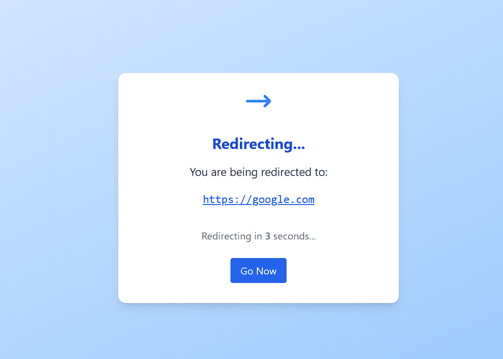

Modern, Secure, and Team-Ready
A beautiful, self-hostable URL shortener and redirector for teams, companies, and power users. Easily create, manage, and share custom short URLs with a modern dashboard, Docker support, and robust security.
Screenshots
Modern dashboard for managing all your shortcuts.
Version page with live commit info and all accessible URLs.
Edit shortcut UI with real-time validation and upstream checks.
Tutorial for creating dynamic shortcuts with variables.
Dynamic shortcut example: Use variables in your URLs, e.g. /jsonpost/10 → https://jsonplaceholder.typicode.com/posts/10

Beautiful redirect page with countdown and dark mode support.
Success page after creating a shortcut, with confetti and sharing options.
Upstream logs: see all upstream shortcut checks and results.
Key Features
- Modern UI: Clean, responsive dashboard and success pages using Tailwind CSS and SVG/FontAwesome icons.
- Config as JSON: All settings stored in
data/redirect.json.config(auto-created with secure defaults). - Secure by Default: Random admin password generated on first run.
- Docker-Ready: Official image with persistent data and easy volume/bind mount support.
- Reverse Proxy Friendly: Works behind Nginx, Traefik, etc.
- Robust Testing: Pytest-based tests for config and DB logic.
- Audit & Stats: Tracks access count, creation/update times, and IPs for each shortcut.
- Dynamic Shortcuts: Supports static and dynamic (parameterized) redirects.
- Version Info:
/versionpage shows live version, commit info, and all accessible URLs (with copy/open buttons).
Use Cases
Team/Company Shortcuts
- Share memorable links like r/zoom or r/docs across your team.
- Centralize all internal URLs for onboarding, meetings, and resources.
- Deploy on a server and use DNS or hosts file for r/ shortcuts.
Personal Productivity
- Quickly create short links for your most-used sites.
- Use dynamic shortcuts for parameterized redirects (e.g., r/meetwith/raj).
- Run locally with Docker or Python, with secure admin access.
Company-Wide DNS/Hosts
- Make r/ shortcuts available to your whole company via DNS or hosts file.
- Automate setup with provided scripts for Windows, macOS, and Linux.
- Restrict admin access and audit all changes.
Self-Hosted & Cloud
- Deploy on-premises, in the cloud, or on your own device.
- Persistent data with Docker volumes or bind mounts.
- Production-ready with Gunicorn, Waitress, or Flask.
Quick Start
Docker (Recommended)
docker run -d --restart unless-stopped -p 80:80 -v redirect_data:/app/data --name redirect rajlabs/redirectOr use a bind mount for easy access to data:
docker run -d --restart unless-stopped -p 80:80 -v "${PWD}/data:/app/data" --name redirect rajlabs/redirectManual (Python)
pip install -r requirements.txt
python app.pyAutomated Hostname Setup
- Windows:
./autostart-windows.ps1 - macOS:
bash autostart-macos.sh - Linux:
bash autostart-linux.sh
Or run the scripts in scripts/ directly to only add the r host entry.
FAQ
- How do I make r/ shortcuts work for everyone?
Deploy on a server and set up DNS or hosts file for r (see README for details). - Is it secure?
Yes! Admin password is random by default, and you can restrict access by IP or VPN. - Can I use it for personal links?
Absolutely! Run locally with Docker or Python and use for your own shortcuts. - How do I update?
Just pull the latest Docker image and restart, or update your code and restart the app. - Where is the data stored?
All config and DB files are in thedata/directory (bind mount or volume for Docker).
Upstream Shortcut Checking & Integration
Prevent Shortcut Conflicts with Upstream Checks
- Before creating or editing a shortcut, the app checks all configured upstreams (e.g., Bitly, go/, your legacy shortener) to see if the shortcut already exists elsewhere.
- If a shortcut is found in any upstream, you see a real-time log and are prevented from creating a conflicting shortcut.
- If no upstreams have the shortcut, you can safely create it.
- All checks and results are shown in a live UI log for transparency.
Integrate with Existing Redirect Solutions
- Add any existing redirector (Bitly, go/, custom, etc.) as an upstream in the config or UI.
- Specify the
base_url,fail_url(the URL returned for non-existent shortcuts), andfail_status_code(e.g., 404). - Example config for an upstream:
{
"name": "bitly",
"base_url": "https://bit.ly/",
"fail_url": "https://bitly.com/404",
"fail_status_code": 404
}You can manage upstreams in the UI at Upstream Config or by editing data/redirect.json.config directly.
How Existing Redirectors Can Integrate
- Any redirector that returns a unique URL or status code for non-existent shortcuts can be used as an upstream.
- Supports both public and private/internal shorteners.
- Allows seamless migration and coexistence with legacy solutions.